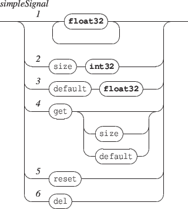

Signal messages can be sent to any address with the form /ITL/scene/signal/identifier, where identifier is a unique signal identifier.
The set of messages supported by a signal is the following:

[1] push an arbitrary data count into the signal buffer. The expected data range is [-1,1]. Note that the internal data buffer is a ring buffer, thus data are wrapped when the data count if greater than the buffer size.
[2] the size message sets the signal buffer size. When not specified, the buffer size value is the size of the first data message.
[3] the default message sets the default signal value. A signal default value is the value returned when a query asks for data past the available values.
[4] the get message without parameter gives the signal current values. The size and default parameters are used to query the signal size and default values.
[5] the reset message clears the signal data.
[6] the del message deletes the signal from the signal space. Note that it is safe to delete a signal even when used by a graphic signal.
EXAMPLE
Creating a signal with a given buffer size:
/ITL/scene/signal/mySig size 200
Creating a signal with a given set of data (the buffer size will be the data size):